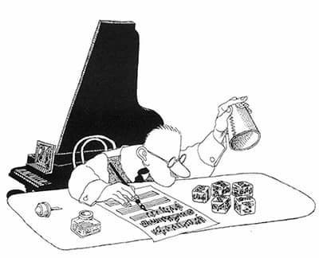

Although music and computer science seem like very different fields, they in fact have a lot of similarities. Both involve a deep understanding of complex patterns and mathematical structures and : musical concepts like melody, harmony, and rhythm can be used to understand algorithms and data structures!
As a result of computer science:
Computer science can be used to create and understand music better.
Algorithmic Composition
Definition: the technique of using algorithms to create music
An example of algorithmic composition in history is Musikalisches Würfelspiel = “music dice game”, which is attributed to Mozart, although not authenticated. The dice rolls randomly selected small sections of music which would be patched together to create a musical piece. All measures except 8 and 16 have different possibilities for each roll (i.e. 11 different versions), with measure 8 only having one possibility and measure 16 having two. This gives a total of 2×11^14 = 759,499,667,166,482 different yet similar waltzes. If the game is played with dice (as intended), then these different pieces are not equally likely due to the different probabilities for different dice sums.
Music is considered composed by computer when the algorithm is able to make choices of its own during the creation process. Examining the results, algorithms can either:
An example of a way compositional algorithms are structured and process data are using translational models. Eg. translating a picture into sound, a JPEG image of a horizontal line could be interpreted as a constant pitch, whereas a line slanting upwards could be an ascending scale.
Music Analysis
Computer science can be used to analyze and understand existing music, and create new ways to visualise and interact with it
Computer Generated Music